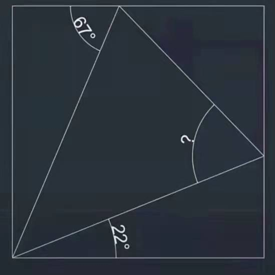
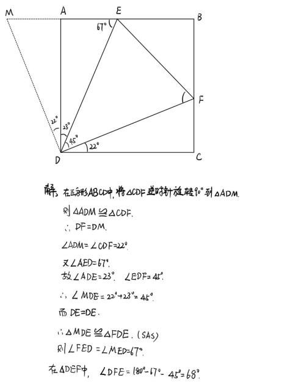
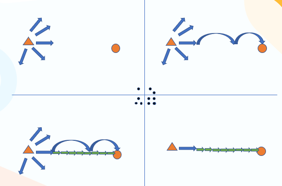

数学：我怎么可能想到？！
作者：曹文雯
按：原问题：“为什么学数学，无论是初中、高中，还是大学，总有种‘这我怎么可能想到’的感觉？”
因为“答案”的呈现逻辑，不是“思考或发现”的逻辑。
通俗来讲，就是我们经常跟新老师说，讲题不是念答案。
不知道大家有没有看过破案类的小说或者《今日说法》之类的节目，会还原侦探或者警方破案过程的：
发现一个疑点→想到一些可能性→逐个验证排除→走入死胡同，重新发现别的疑点，循环→最终真相大白。
练习册的答案，往往就是最后“大白天下”的真相：按照顺序排列好，先怎么样再怎么样，逻辑清晰思路顺畅。
你要是只看这样的犯案过程，你也得苦恼：这警察都怎么知道的？事先在这些犯罪分子身上按了窃听器吗？
但是真正能够帮助新任警察获得破案能力和经验的，是前面咱们说的这个破案过程。
怎么看出疑点？
逐步排查的时候先查哪个再查哪个效率更高？
怎么问口供？怎么确认口供的真实性？
……
这些才是能帮到你解决新问题的能力。
仅仅看一看最终的“答案”，是不够的。
这些事情，在简单题上不太明显，你非常会的题目，往往很容易把这样的过程跳过去。
在你有困难的问题上，才会格外明显。
我举一个最近在想法看到大家玩的“每日一题”吧：


很久不碰初中数学的小伙伴们，可能会觉得这个答案简直太奇妙了，怎么能想到这样做辅助线呢？
如果我们还原这个题的思考过程，它可能是这样的：
①把能算的角度都努力算一算往图上标。先尽量扩充已知信息。
比如两个已知角都在直角三角形里，那么他们的另一个锐角很好算。
以及最关键的答案中标上的45°
②直接倒不出来，考虑辅助线：
45°是个非常特殊的角，它是直角的一半。所以想把22°角和23°角拼起来，他们是剩下的一半。于是利用正方形进行旋转拼接。瞪眼法看出拼接后的三角型跟中心三角形瞅着像全等。
或者：正方形中这个45°角，一看就是“半角模型”。按照半角模型的思路，旋转三角形得到全等。
——找到全等的对应角之后，本题的结论容易。
③确认关键环节：补上全等需要的三个条件、补上辅助线做法所需要的旋转过去的三角形全等的三个条件
④整理，书写完整证明过程。
删掉没用到的试探过程。补齐“一眼就看出来”的倒角的理由等等。
你可以看到——
-
倒角的方向一开始是发散的，最终找到路径之后，再把不用的砍掉。 而不是“一开始就知道这个角有用，另一个角没有用”
-
实际思考过程中，会根据一两个条件（指：想要拼出45°角和另一个45°来相等），先大概找到“看着像全等”的家伙，看看如果他们全等，有没有用，然后再回过头来确认这个全等是不是确实可证的。
并不会在最开始的思考中保证每一步都很严谨。
用图示来形容这个思考过程的话，大概是这样：

如果我只给你看最后一个图，你当然会觉得“我怎么想不到”啦！
我的一位大学老师曾经这样形容这个事情：（大意）
你们看到的物理学，是一栋美丽的宫殿。但是这个宫殿搭起来的过程中，是需要有很多脚手架的。搭建完之后，这些脚手架就被拆掉了。于是整个体系看上去很完美，很漂亮。
但是我希望给你们展示，这些脚手架当初是怎么搭的，曾经走过什么弯路，后来怎么知道哪里可以拆除。这个过程才能让你们知道未来要怎么去给这栋大厦继续添砖加瓦。
我非常喜欢这个比喻。希望可以有更多人能领会到“答案”和“讲解”的不同。